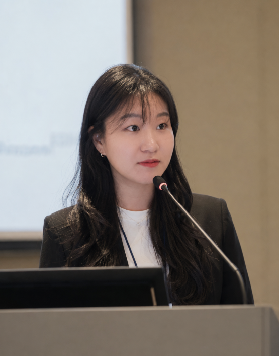

학력Education
2026
이화여자대학교 교육대학원 AI융합교육전공 석사M.Ed. in AI Convergence Education, Ewha Womans University
2021
서울교육대학교 초등교육과 학사B.A. in Elementary Education, Seoul National University of Education

안녕하세요. 서울에서 초등교사이자 연구자로 활동하고 있는 박새연입니다. AI 기반 교육, 교육 데이터, 학습분석과 학습과학에 관심이 있습니다.
교사와 학생이 일상적인 교실에서 마주하는 문제를 더 깊이 이해하고, 기술이 의미 있는 교수·학습을 어떻게 지원할 수 있는지 탐구합니다.
Hello! I am Sae-Yeon Park, an elementary school teacher and emerging researcher based in Seoul, Korea. My interests lie in AI in Education, educational data, learning analytics, and learning science.
I explore the everyday challenges teachers and students face and how technology can support more meaningful teaching and learning.
이화여자대학교 교육대학원 AI융합교육전공 석사M.Ed. in AI Convergence Education, Ewha Womans University
서울교육대학교 초등교육과 학사B.A. in Elementary Education, Seoul National University of Education
연구 관심 분야Research interests
PUBLICATIONS · PRESENTATIONS
AI 기반 교육과 교육 데이터가 교사의 판단과 학생의 학습을 어떻게 지원할 수 있는지 연구합니다.I study how AI in Education and educational data can support teacher judgment and student learning.
교육문제연구, 91, 53–95The Journal of Research in Education, 91, 53–95
이화여자대학교 교육대학원 석사학위논문Master’s Thesis, Ewha Womans University
2025 KSET–KAIM Joint Fall Conference
TEACHING · COMMUNITY · PRACTICE
연구와 교실을 연결하고, 교사와 학생이 기술을 주체적으로 활용할 수 있도록 돕습니다.I connect research with classroom practice and help teachers and students use technology with agency.
2023 · 2024 · 2026
서울특별시교육청Seoul Metropolitan Office of Education
데이터 기반 수업과 AI·지능형 튜터링 시스템의 교실 적용을 주제로 교사 연수를 설계하고 실천 사례를 공유했습니다.Designed teacher professional development on data-driven instruction and classroom integration of AI and intelligent tutoring systems.
2023—2026
한국과학창의재단Korea Foundation for the Advancement of Science and Creativity
수업 설계, 디지털 도구 통합, 생성형 AI·LLM 활용과 지속 가능한 학교 혁신을 지원했습니다.Mentored teachers in instructional design, digital-tool integration, generative AI and LLM use, and sustainable classroom innovation.
2026
대한민국 교육부Ministry of Education, Republic of Korea
2024
서울특별시교육청교육연구정보원Seoul Education Research & Information Institute
2026—Present
서울도곡초등학교Seoul Dogok Elementary School
2023—2025
한국과학창의재단Korea Foundation for the Advancement of Science and Creativity
2023
강남서초과학교육센터Gangnam-Seocho Science Education Center
2022—2024
서울논현초등학교Seoul Nonhyun Elementary School
CURRICULUM VITAE · JULY 2026
아래에서 전체 CV를 바로 확인하거나 PDF 파일로 내려받을 수 있습니다.View the full CV below or download a copy as a PDF.
ABSTRACT
본 연구는 초중등학교의 학부모 민원 처리 과정에서 교사를 지원하고 교권을 보호하기 위한 NEIS 연계 AI 서면 민원처리시스템 프로토타입을 개발하였다. 문헌 분석과 대규모 교사 요구조사, 전문가 타당화를 통해 설계원리를 도출하고 교사와 학부모를 대상으로 사용성을 평가하였다. AI 민원 지원, 기관 차원의 단계적 이관, 누가기록, 번역 및 디지털 원패스 로그인 기능을 포함한다.
This study developed a prototype AI written-complaint management system linked to NEIS to support teachers and protect teachers’ rights. Design principles were derived through literature review, large-scale teacher needs analysis, and expert validation, followed by usability evaluation with teachers and parents.
본 연구는 생활지도와 상담 과정에서 생성되는 성찰문, 상담·관찰 기록, 또래관계 자료 등의 비정형 데이터를 체계적으로 수집·구조화·활용하는 교사용 의사결정 지원 시스템을 설계하고 개발하였다. 사용자 중심 설계와 설계·개발 연구 방법을 적용해 6개 설계요소와 20개 설계원리를 도출했으며, 교사 대상 평가에서 높은 수용도를 확인하였다.
This study designed and developed a teacher decision-support system that collects, structures, and uses unstructured classroom data. Using user-centered design and design-and-development research, it derived six design elements and twenty design principles. Teacher evaluation showed high perceived usefulness, ease of use, and intention to use.
2025-2학기 이화여자대학교 교육대학원 우수학위논문상
Outstanding Master’s Thesis Award, Graduate School of Education, Ewha Womans University
2025 한국교육공학회·한국교육정보미디어학회 추계공동학술대회 우수 포스터 발표상(우수상)
Outstanding Poster Presentation Award (Excellence Award), 2025 KSET–KAIM Joint Fall Conference